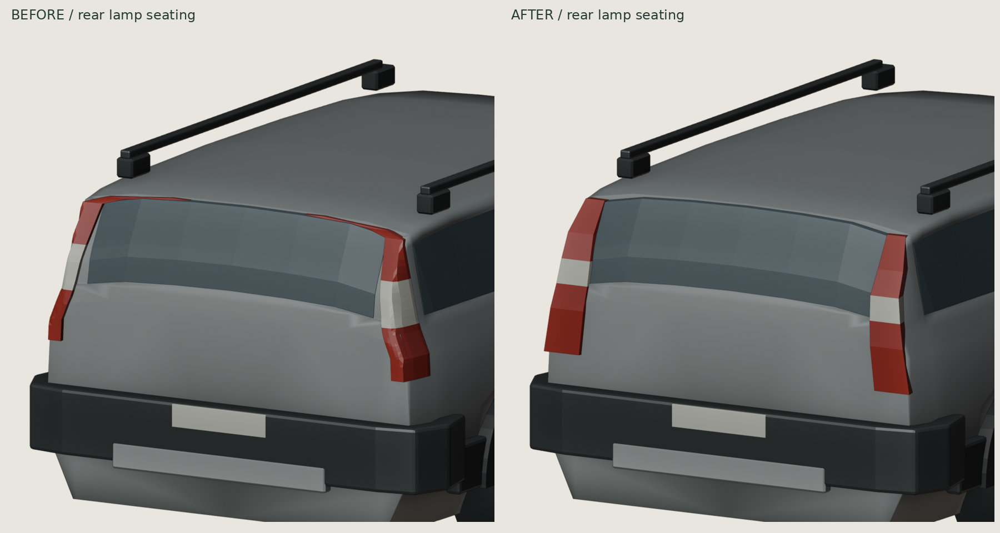
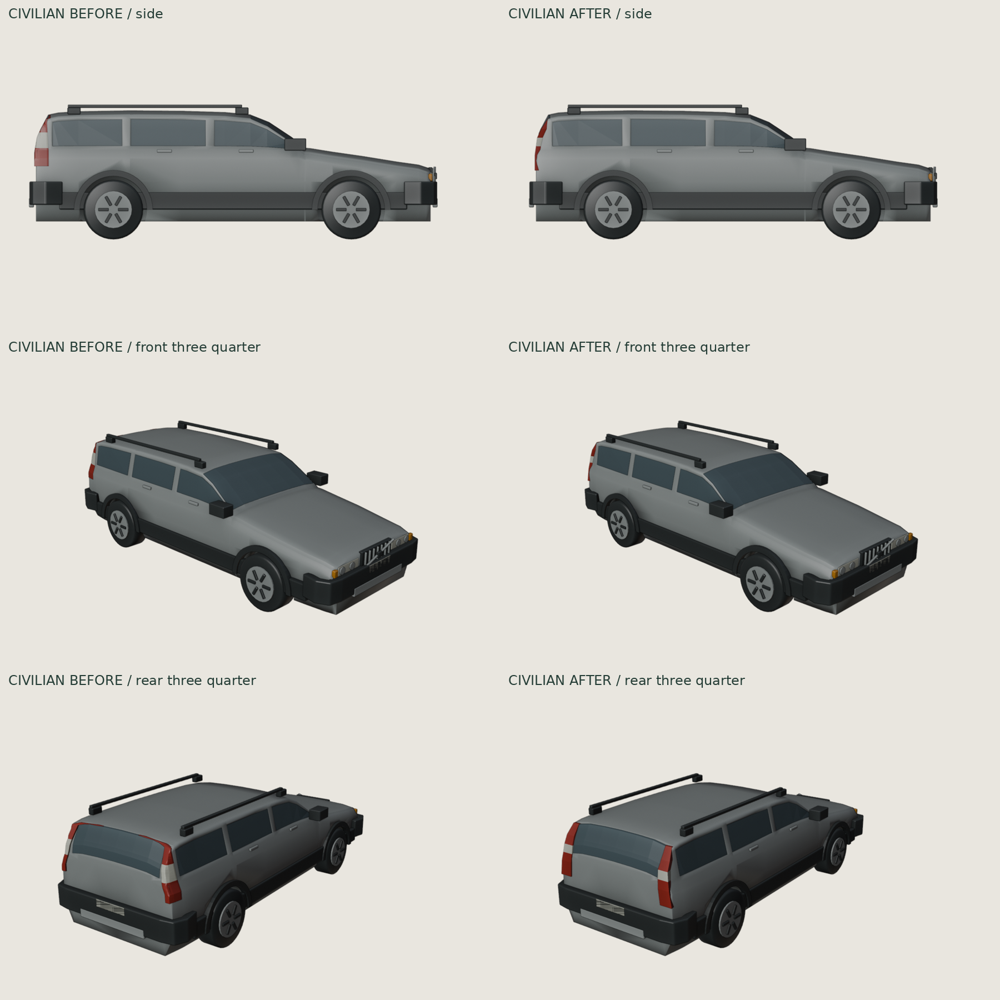
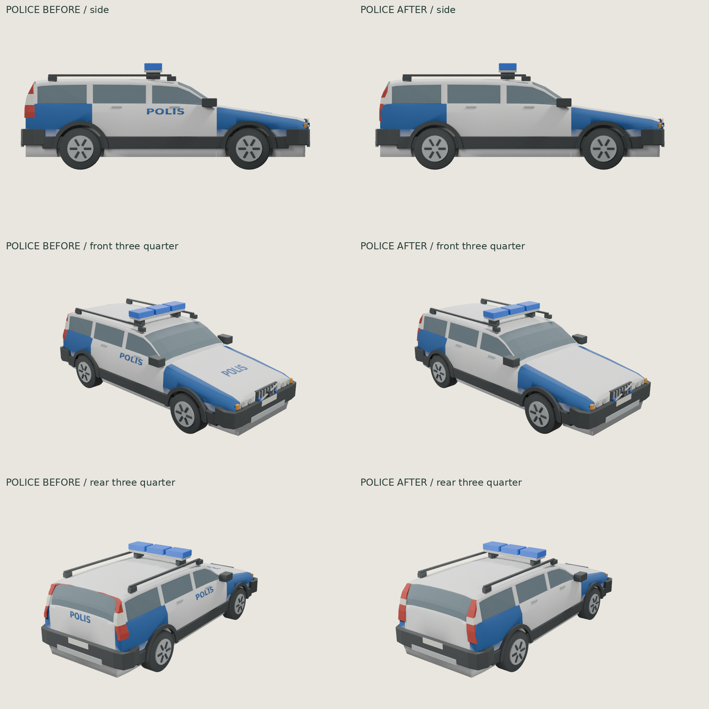

XC70 P2 · integrated block tail lamps
Latest refinement of the existing shared master. Flat rear-facing red/ivory blocks replace the narrow corner-wrapped lenses. The housings taper into the body, with most of their depth embedded. All POLIS lettering is removed; blue/white body paint, fully blue fender/quarter panels and lightbar remain.
Rear close-up · before / after

Same fixed camera and scale. Only the two rear-lamp meshes changed; four text meshes were removed. Body and glazing vertices, topology and transforms are identical to the previous master, as are wheels, bumpers, roof rails and police equipment. No general body rounding or smoothing change.
Civilian · before / after

Police · before / after

Verified results and limits
Closed, consistently wound body and rear-lamp solids; no degenerate faces or BVH self-intersection candidates. Both GLBs pass repository validation, Blender reimport and the existing Three.js loader. The civilian and police cars share identical common geometry. Blue body vertex colours over both axles are verified in the export. No text nodes, texture images or yellow paint remain in the current GLBs. Physical iPad/Safari GPU performance is untested.
Remaining simplifications: opaque faceted glazing, broad bumper corners, soft wheel-arch shading and simplified lamp optics. The larger rear lights are a deliberate stylized block interpretation, not an exact manufactured lens reconstruction. Body geometry was preserved rather than broadly reworked.